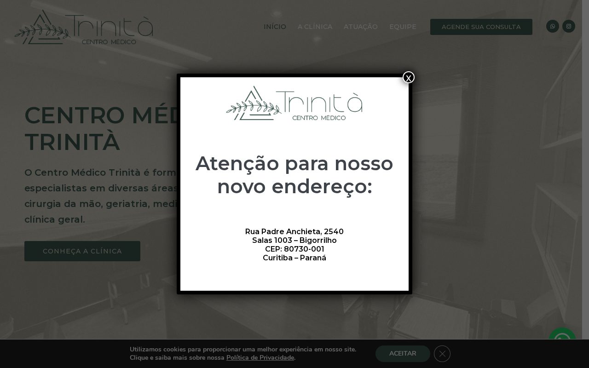
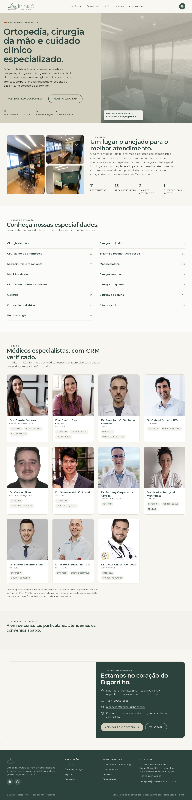

O Centro Médico Trinità já atrai o paciente certo. O site perde parte dele antes do agendamento.
A clínica reúne 11 especialistas ativos, forte avaliação no Doctoralia e um endereço central no Bigorrilho — mas quem chega ao site hoje encontra um modal de endereço cobrindo o conteúdo, uma barra de cookies simultânea, textos de tema de demonstração em inglês ainda presentes no código, e indicadores institucionais sem números. Cada barreira reduz a chance de o visitante chegar ao agendamento. Um redesenho focado em uma única jornada — sintoma → especialidade → médico → agendamento — recupera essa conversão sem alterar o que já funciona: a equipe, o endereço e a integração com Doctoralia e WhatsApp.
Site atual vs. direção proposta.
Site atual — primeiro acesso
Capturado ao vivo
Direção proposta — index.html deste estudo
Concept
Três problemas, três correções diretas.
Selecionados pelo maior impacto em conversão e confiança, com base no que está publicado hoje.
Problema — dupla barreira no 1º acesso
Um modal de "novo endereço" cobre o hero e, ao mesmo tempo, uma barra de cookies ocupa a base da tela — duas ações antes do visitante ver qualquer conteúdo.
Correção — hero limpo, endereço no lugar certo
O endereço atual passa a viver como legenda permanente sobre a foto do hero e na seção de contato — sem modal, sem interceptar o primeiro scroll.
Problema — indicadores sem números e conteúdo de tema
A seção institucional mostra apenas símbolos ("+", "%") ao lado de "clientes atendidos" e "clientes satisfeitos", e o DOM ainda contém blocos do tema de demonstração em inglês ("A futuristic future ahead of you", "Premium Build").
Correção — apenas o que é verificável
Indicadores substituídos por contagens reais e auditáveis (especialistas, áreas de atuação, convênios) e remoção completa de qualquer bloco de tema não relacionado à clínica.
Problema — equipe sem hierarquia e acessibilidade limitada
A seção de equipe tem grandes vãos vazios antes da rolagem chegar às áreas de atuação, e o site bloqueia zoom do usuário (user-scalable=no), prejudicando a leitura para pacientes idosos.
Correção — equipe em primeiro plano, zoom liberado
Grade de equipe com foto, CRM e especialidade de cada médico logo após a apresentação da clínica, tipografia legível e zoom do navegador sempre disponível.
O que este estudo já inclui.
Site de produção
- HTML/CSS/JS estático
- Sem CMS, sem framework
- Pronto para publicar
Sistema visual
- Cores e tipografia derivadas da marca real
- Grade de equipe e áreas de atuação
- Componentes de conversão
Acessibilidade
- Zoom liberado
- Menu com foco e Escape
- Contraste revisado
Rastreabilidade
- Manifesto de fontes de cada asset
- Relatório de verificação técnica
- Sem dado inventado
Como isso avança, em quatro etapas.
- Etapa 1Validação do conteúdo com a clínica: confirmar equipe ativa, convênios e horários diretamente com a recepção.
- Etapa 2Ajuste fino de textos e imagens junto à equipe médica, com aprovação por especialista.
- Etapa 3Publicação no domínio atual, mantendo Doctoralia e WhatsApp como canais de agendamento.
- Etapa 4Acompanhamento de agendamentos por especialidade e origem após a publicação.
O que precisa vir da clínica para publicar.
- Confirmação da lista de especialistas ativos e respectivos CRMs junto à secretaria.
- Confirmação de convênios aceitos além de Unimed e Judicemed, se houver.
- Acesso ao domínio e hospedagem atuais para publicação (ou instrução de DNS).
- Aprovação da equipe médica para uso de fotos e biografias no formato apresentado.